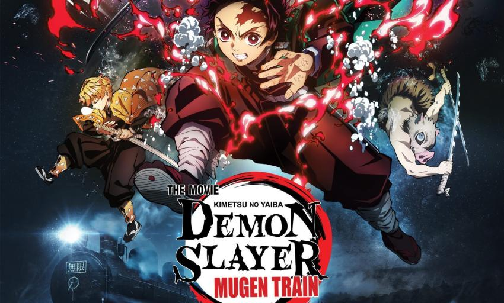

Клинок Рассекающий Деомнов : Бесконечный Поезд

Завершив оздоровительные тренировки в Доме бабочки, Тандзиро и его друзья отправляются выполнять новое задание. На поезде «Бесконечный» творится что-то неладное: в одночасье там исчезает более 40 человек! А значит, Тандзиро, Нэдзуко, Иносукэ и Дзэницу предстоит сразиться с могущественным демоном. Присоединившись к одному из сильнейших мечников, пламенному столпу Кёдзюро Рэнгоку, герои бросают вызов врагу, в то время как поезд «Бесконечный» мчится в долину отчаяния.